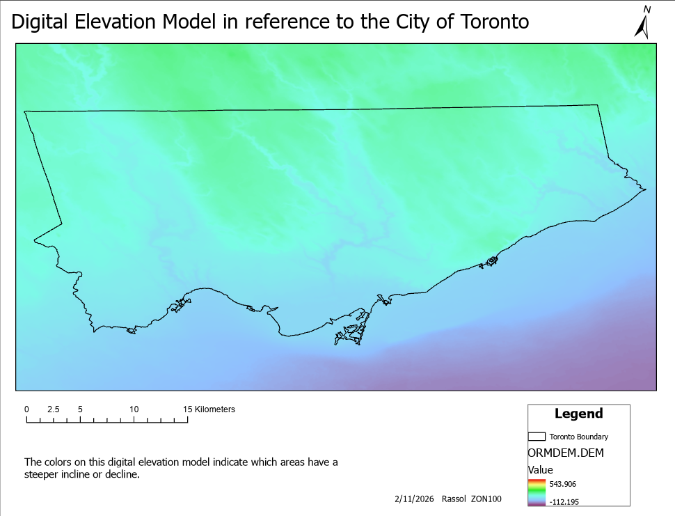
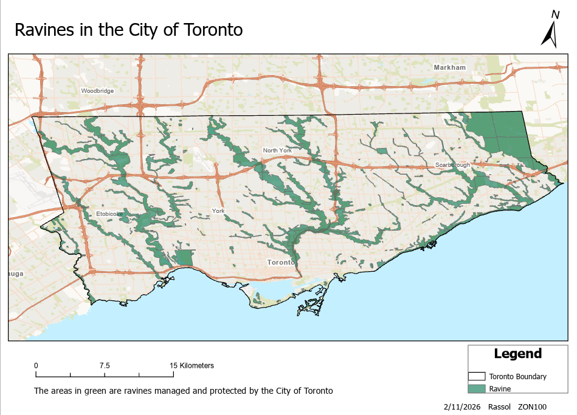
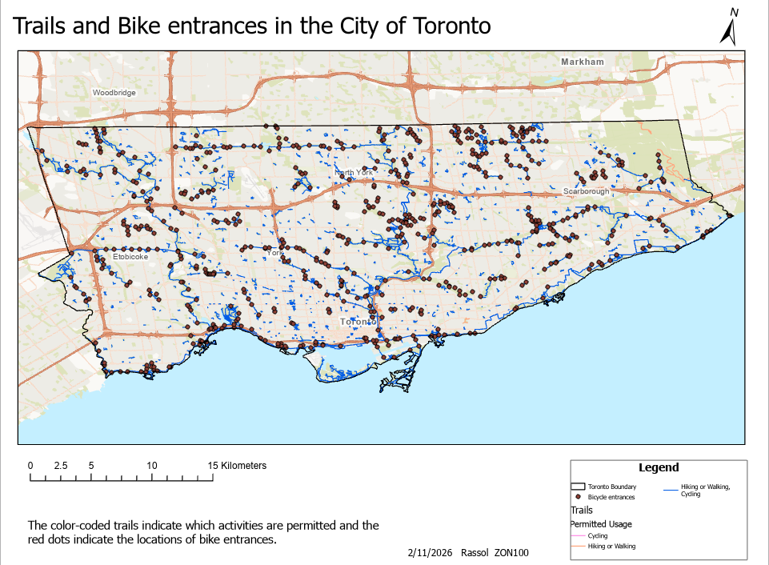
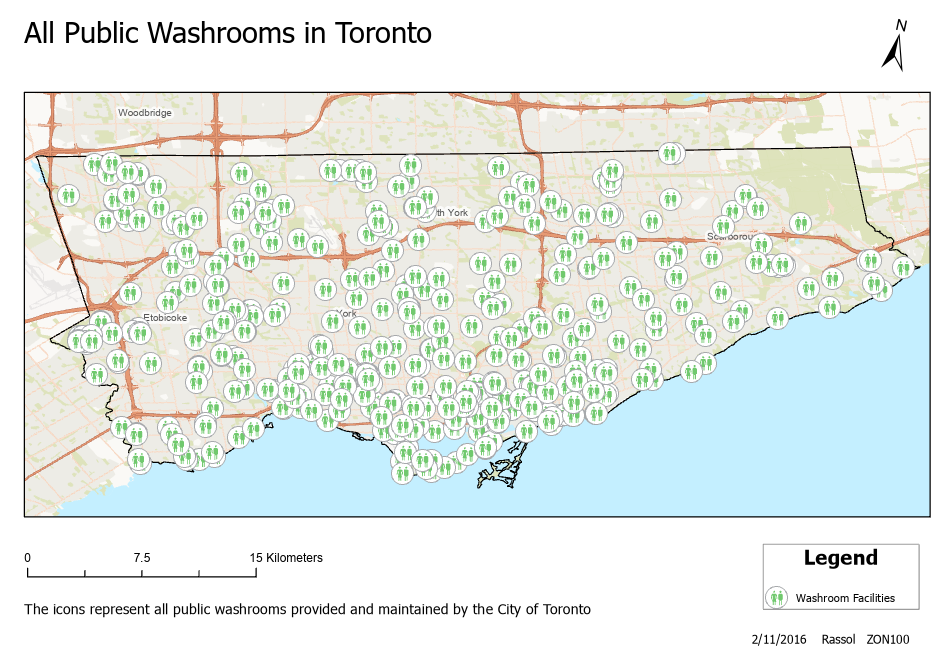
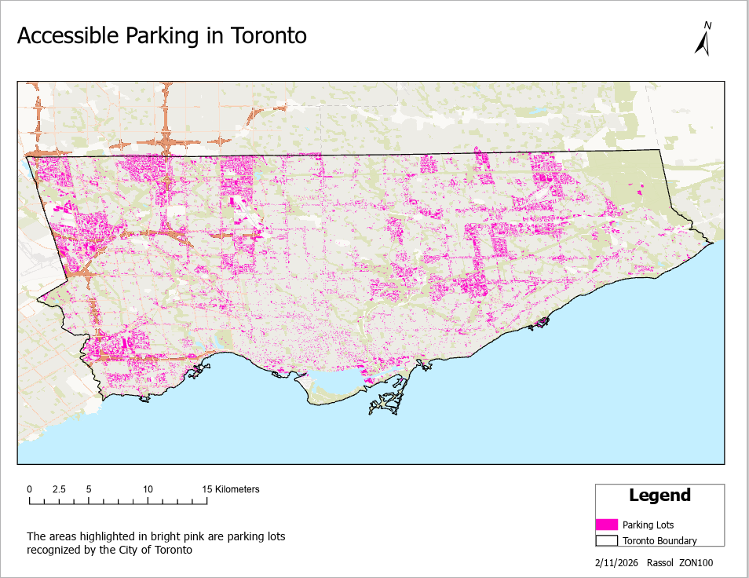

These trails are natural spaces. Please respect the environment by leaving no trace, using your best judgment regarding weather conditions and your skill level.
Trails Located in Toronto
Ours to Discover
Map Gallery
Map 1

The map above is a DEM (Digital Elevation Model) which idicates which areas around Toronto have a higher elevation than others. This is helpful when deciding how steep of a hill you are willing to hike or bike at.
Map 2

This map shows where the ravines are around Toronto. Approximately 17% of Toronto is covered in these ravines which is over 11,000 hectares or more than 300 kilometers! When exploring these lands it's important to be consious of the footprint you leave behind.
Map 3

This map highlights the different path made and maintained by the City of Toronto. In the legend the trails are colour coded for each activity that is allowed. The bike icons indicate the bike trail entrances that are spread out around the city.
Map 4

Finding public bathrooms is always a concern especially when frequently spending time outdoors. Luckly the City of Toronto have public bathrooms all around the city!
Map 5

Just like the previous map, finding parking in the city is another big concern. Which is solved on this map with public parking lots being shown in pink.